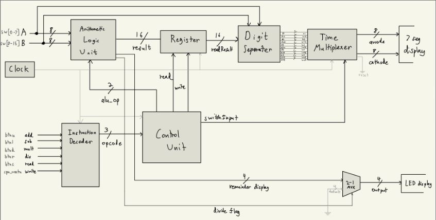
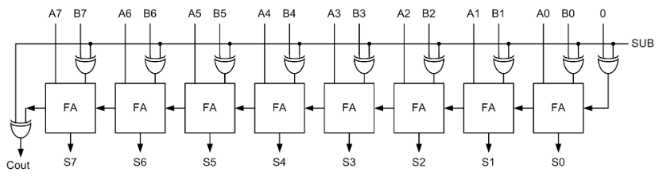
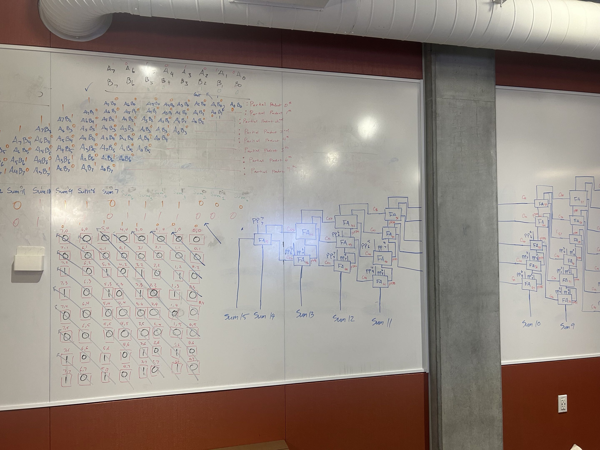
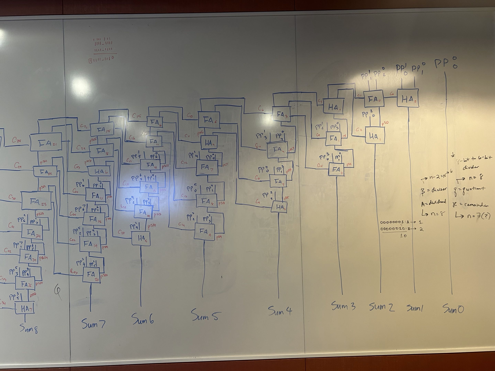
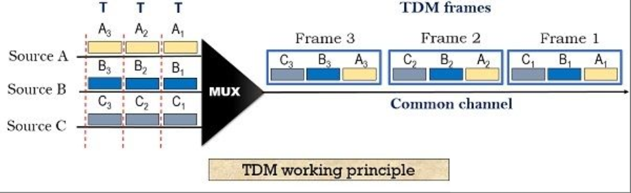
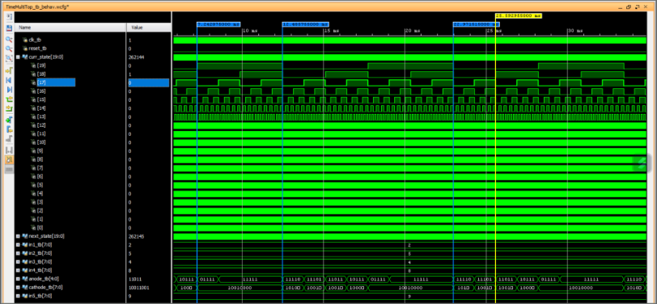
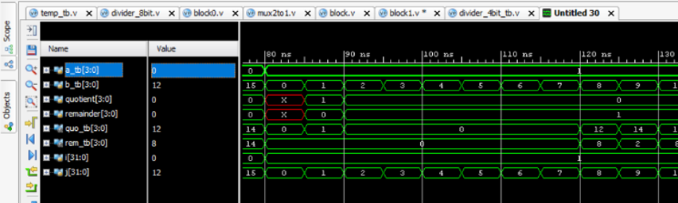
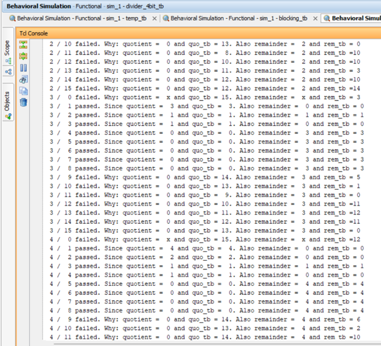
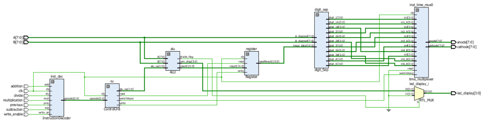

Planning
This sophisticated project entitled "8-bit RISC Processor" was adapted into a calculator on an FPGA board, namely the Nexys A7-100T board. The focus of this project was to simulate a RISC processor through various modules, and validate its functionality through basic computations (ie., addition, subtraction, multiplication, and division). The block diagram sketched below represents the architecture of our implementation.

Design Process & Implementation
My primary role in this project was designing the logic for arithmetic operations, creating a functional display using TDM (time-division multiplexing), and authoring the official report and presentation. The implementation for addition and subtraction was designed using a Ripple Carry Adder and Subtractor, which conveniently holds a flag for overflow and can alternate between addition and subtraction via the select line that we implemented in our module.

The 8-bit Array Multiplier, co-designed by my partner Matt and I, uses a partial product tree and an extended full adder tree. A couple images of our design process can be observed below because we had to understand connections between seperate logical structures, like adders and multiplexers to get sensible results on Vivado:


TDM is an avenue we explored in order to access several 7-segment displays simultaneously on the trainer board. In principle, we can utilize multiple displays provided that an ideal refresh rate is used. If we can utilize this feature at a rate such the human eye cannot percieve the distinct changes that occur on the displays, then we output multiple signals (numbers) simultanteously. Evidently, this is a necessary feature to create a functional display so that we can compute, observe, and validate the computations therein on our platform.


Verification
Once we were relatively confident with the design of our digital circuits we needed to be completely certain
that every test case possible would invariably be correct. The primary verification strategy used in
this project were exhaustive self-checking testbenchs for every digital block we developed in Vivado. Judiciously, this
methodology proved useful in ascertaining specific test cases where our divider block fell short in correctly computing
specific test cases. On the other hand, it verified that our Ripple Carry Adder/Subtractor and Array Multiplier were
logically sound.
 
Documentation
As the primary author I was also responsible for the project's
technical documentation,
covering system architecture, module-level design, implementation details†, and hardware verification for
our FPGA-based 8-bit RISC processor. In particular, the report Diego and I authored documents design
decisions, testing methodology, simulation results, and lessons learned. Moreoever, the original powerpoint
presentation tied this project can be found
here
, which expounds on our report concisely. The video demonstration below briefly covers the functionality of
our latest implementation on the A7 trainer board.

Video Demonstration
†For specific references on code-level work please refer to my GitHub:
Hard Skills
- Verilog HDL Development
- FPGA Design & Implementation
- Hardware Verification & Testbench Development
- Digital Logic Design
Soft Skills
- Team Collaboration
- Critical Thinking
- Technical Communication
- Attention to Detail
Software & Tools
- Microsoft Word & PowerPoint
- GitHub
- Xilinx Vivado & Verilog HDL
- 7-segment Display & FPGA I/O Interfaces
- Nexys A7-100T FPGA Board